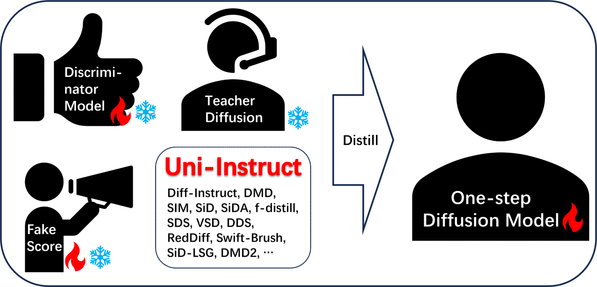
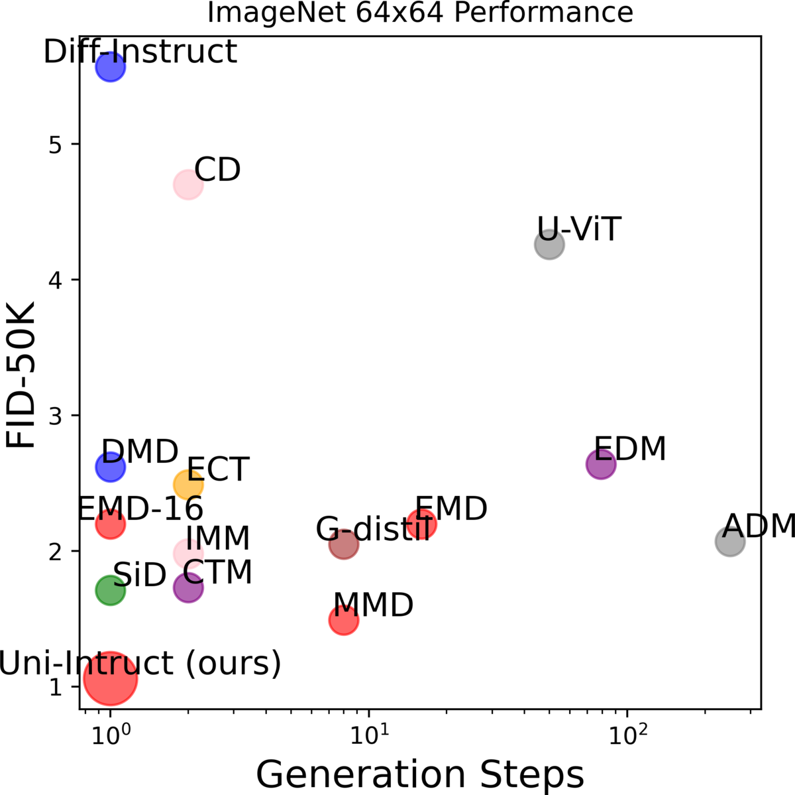
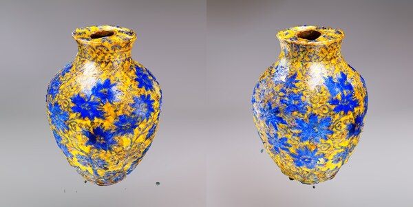
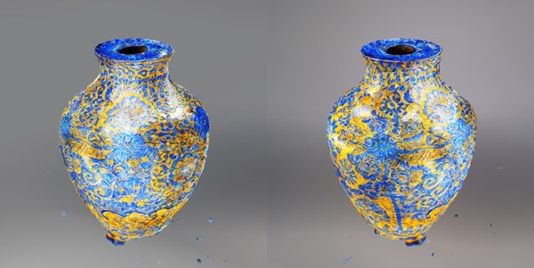
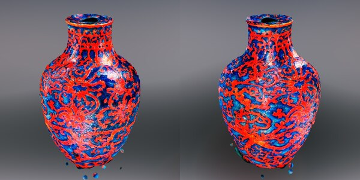
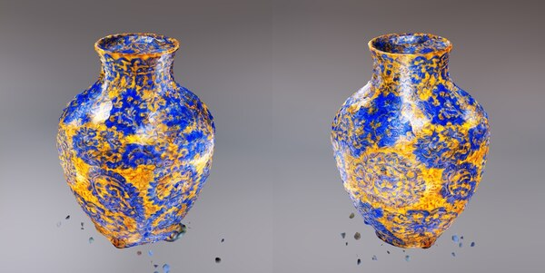
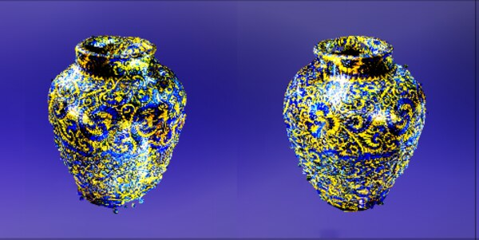
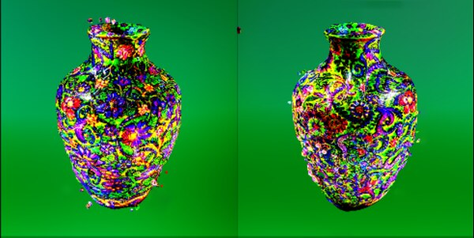
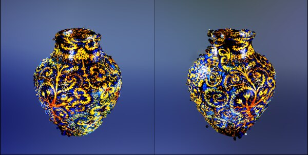
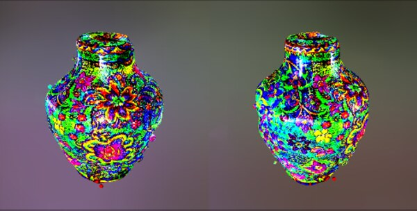

TL;DR
One-step diffusion distillation has split into two camps: KL-based methods (Diff-Instruct, DMD, f-distill) and score-based methods (SiD, SIM, SiDA). Uni-Instruct shows these are all special cases of a single object — the diffusion expansion of the f-divergence family — and turns it into a tractable training loss.


Left: Uni-Instruct unifies >10 distillation methods under one f-divergence framework. Right: One-step FID on ImageNet 64×64 — Uni-Instruct (FKL, long training) reaches 1.02 NFE=1.
Two camps, one framework
Most one-step diffusion distillation methods can be put in one of two boxes:
- KL-based — Diff-Instruct, DMD, f-distill, SwiftBrush. Fast to converge, but mode-seeking and prone to mode collapse.
- Score-based — SiD, SIM, SiDA, SiD-LSG. Strong sample quality, but slower convergence and sometimes sub-optimal fidelity.
The natural question: can we unify them so we get the best of both? Uni-Instruct answers yes, by
proving a diffusion expansion of the f-divergence family. The expansion gives a continuous family of
losses whose gradients decompose into a weighted combination of Grad(DI) (the KL branch) and
Grad(SIM) (the score branch). Existing methods sit at specific corners of this family.
The full picture: every row below is a prior method, and the third column shows the divergence inside Uni-Instruct that recovers it.
| Method | Loss | Div. in UI | Task | Gradient |
|---|---|---|---|---|
| Diff-Instruct (DI) | IKL | χ² | One-step diffusion | Grad(DI) |
| DI++ | IKL + reward | χ² | Human-aligned diffusion | Grad(DI) + ∇θℒreward |
| DI* | KL + reward | RKL | Human-aligned diffusion | Grad(SIM) + ∇θℒreward |
| SDS | IKL | χ² | Text-to-3D | Grad(DI) |
| DDS | IKL | χ² | Image editing | Grad(DI) |
| VSD | IKL | χ² | Text-to-3D | Grad(DI) |
| DMD | IKL + regression | χ² | One-step diffusion | Grad(DI) + ∇θMSE |
| RedDiff | IKL + data fidelity | χ² | Inverse problems | Grad(DI) + ∇θMSE |
| DMD2 | IKL + GAN | χ² | One-step diffusion | Grad(DI) + ∇θℒadv |
| SwiftBrush | IKL | χ² | One-step diffusion | Grad(DI) |
| SIM | general KL | RKL | One-step diffusion | Grad(SIM) |
| SiD | KL | RKL | One-step diffusion | Grad(SIM) |
| SiDA | KL + GAN | RKL | One-step diffusion | Grad(SIM) + ∇θℒadv |
| SiD-LSG | KL | RKL | One-step diffusion | Grad(SIM) |
| f-distill | I-f + GAN | χ² | One-step diffusion | λf·Grad(DI) + ∇θℒadv |
| Uni-Instruct (ours) | f-div. + GAN | all | all of the above | λfDI·Grad(DI) + λfSIM(x)·Grad(SIM) + ∇θℒadv |
What's actually new
1. Diffusion expansion of f-divergences
We start from the standard f-divergence Df(q‖p) and consider the diffusion expansion that matches not just the data distribution but the entire forward-noise marginals (qt, pθ,t) for t ∈ [0, T]. This expansion is what gives one-step distillation its supervisory signal — but the resulting objective is intractable for general f.
2. Tractable equivalent loss via gradient-equivalence theorems
We prove that the gradient of the expanded f-divergence is gradient-equivalent to a closed-form expression involving the teacher score and the student's implicit score. Concretely, for any valid f, the gradient decomposes into two terms that we already know how to compute (Grad(DI) and Grad(SIM)), with f-specific weighting functions λf. This unblocks training for the whole f-divergence family — including Forward-KL, Reverse-KL, Jensen-KL (JKL), χ², JS — without needing density ratios.
3. Flexible recipes: RKL → FKL warm-up
The framework makes it trivial to swap or combine divergences. We find a particularly clean two-stage recipe: train with RKL until convergence, then continue with FKL. RKL gives strong mode-seeking convergence; FKL follows up with mode-covering to fix tail behavior. This is what produces our best ImageNet 64×64 number.
Why this matters: unifying prior work across four applications
The same Uni-Instruct framework recovers existing methods from four different application areas just by picking a divergence and adding (or omitting) an auxiliary loss. Below is a guided tour of how each prior method drops out as a special case — adapted from Appendix D of the paper.
One-step diffusion distillation
Picking χ² kills the SIM weighting and leaves pure Grad(DI). Picking RKL does the opposite. Two camps fall out cleanly:
Text-to-3D (NeRF distillation)
DreamFusion's SDS and ProlificDreamer's VSD both minimise integral KL between a NeRF-rendered distribution and a frozen text-to-image diffusion. With the right weighting W(t), that's exactly the χ² (Grad(DI)) instance of Uni-Instruct.
Swapping in FKL (instead of the implicit χ²) gives the 3D-vase results below.
Solving inverse problems
RedDiff approximates p(x|y) by a variational q(x), expands the KL along the diffusion trajectory, and ends up with a score-matching loss:
So RedDiff = Uni-Instruct (RKL) + a tractable data-fidelity term.
Human-preference alignment
RLHF for diffusion adds a KL regulariser to a reference distribution plus a reward. Two recent instantiations sit at different f's:
- DI++ (integral KL) ⇒ χ² Uni-Instruct + reward
- DI* (score-based KL) ⇒ RKL Uni-Instruct + reward
Same template: pick f, optionally add reward / GAN / regression.
Results
CIFAR-10 (unconditional)
| Family | Model | NFE | FID ↓ |
|---|---|---|---|
| Teacher | VP-EDM | 35 | 1.97 |
| Consistency | sCT / ECT / iCT | 2 | 2.06 / 2.11 / 2.46 |
| One-step | Diff-Instruct | 1 | 4.53 |
| One-step | DMD | 1 | 3.77 |
| One-step | SiD | 1 | 1.92 |
| One-step | SiDA | 1 | 1.52 |
| One-step | SiD²A | 1 | 1.50 |
| One-step | Uni-Instruct (RKL, F.S.) | 1 | 1.52 |
| One-step | Uni-Instruct (FKL, F.S.) | 1 | 1.52 |
| One-step | Uni-Instruct (FKL, L.T.) | 1 | 1.48 |
| One-step | Uni-Instruct (JKL, F.S.) | 1 | 1.46 |
CIFAR-10 (class-conditional)
| Family | Model | NFE | FID ↓ |
|---|---|---|---|
| Teacher | VP-EDM | 35 | 1.79 |
| One-step | Diff-Instruct | 1 | 4.19 |
| One-step | SIM | 1 | 1.96 |
| One-step | SiD | 1 | 1.71 |
| One-step | SiDA / SiD²A | 1 | 1.44 / 1.40 |
| One-step | f-distill | 1 | 1.92 |
| One-step | Uni-Instruct (RKL, F.S.) | 1 | 1.44 |
| One-step | Uni-Instruct (JKL, F.S.) | 1 | 1.42 |
| One-step | Uni-Instruct (FKL, F.S.) | 1 | 1.43 |
| One-step | Uni-Instruct (FKL, L.T.) | 1 | 1.38 |
ImageNet 64×64 (class-conditional)
| Family | Model | NFE | FID ↓ |
|---|---|---|---|
| Teacher | VP-EDM | 511 | 1.36 |
| Diffusion | ADM | 250 | 2.07 |
| Diffusion | DiT-L/2 | 250 | 2.91 |
| Consistency | ECT | 1 | 2.49 |
| Few-step | DMD2 (longer) | 1 | 1.28 |
| Few-step | SiD | 1 | 1.71 |
| Few-step | SiDA / SiD²A | 1 | 1.35 / 1.10 |
| Few-step | f-distill | 1 | 1.16 |
| Few-step | Uni-Instruct (RKL, F.S.) | 1 | 1.35 |
| Few-step | Uni-Instruct (JKL, F.S.) | 1 | 1.28 |
| Few-step | Uni-Instruct (FKL, F.S.) | 1 | 1.34 |
| Few-step | Uni-Instruct (FKL, L.T.) | 1 | 1.02 |
Ablation: divergence × GAN × init
Switching divergence inside the same framework changes FID by >3×. JKL is the best stand-alone choice; GAN loss helps every divergence; warm-starting from a converged RKL run further improves all variants.
| Divergence | SiD init. | GAN | FID ↓ |
|---|---|---|---|
| none (GAN only) | — | ✓ | 8.21 |
| χ² | — | ✓ | 4.37 |
| JS | — | ✓ | 5.23 |
| JKL | — | ✓ | 1.46 |
| RKL | — | — | 1.92 |
| FKL | — | — | 1.88 |
| RKL | — | ✓ | 1.52 |
| FKL | — | ✓ | 1.52 |
| RKL | ✓ | ✓ | 1.50 |
| FKL | ✓ | ✓ | 1.48 |
| JKL | ✓ | ✓ | 1.50 |
Bonus: text-to-3D
Because Uni-Instruct subsumes SDS/VSD, it plugs straight into a ProlificDreamer-style text-to-3D pipeline. Adding a discriminator head on the U-Net encoder and distilling for ~400 epochs with FKL gives 3D vases with visibly more diversity and crisper surface detail than ProlificDreamer.







